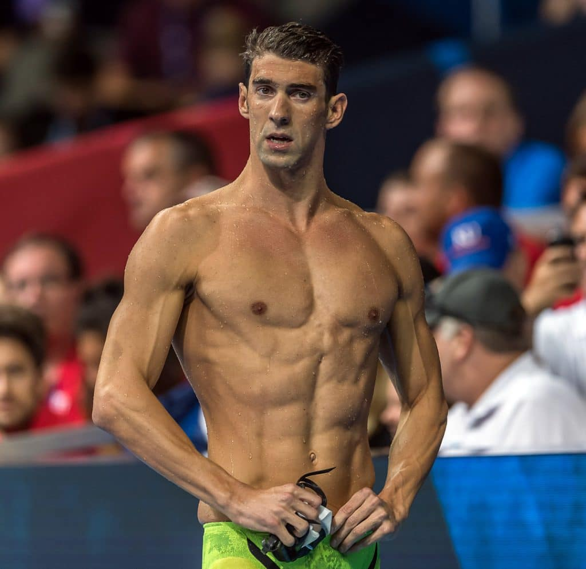
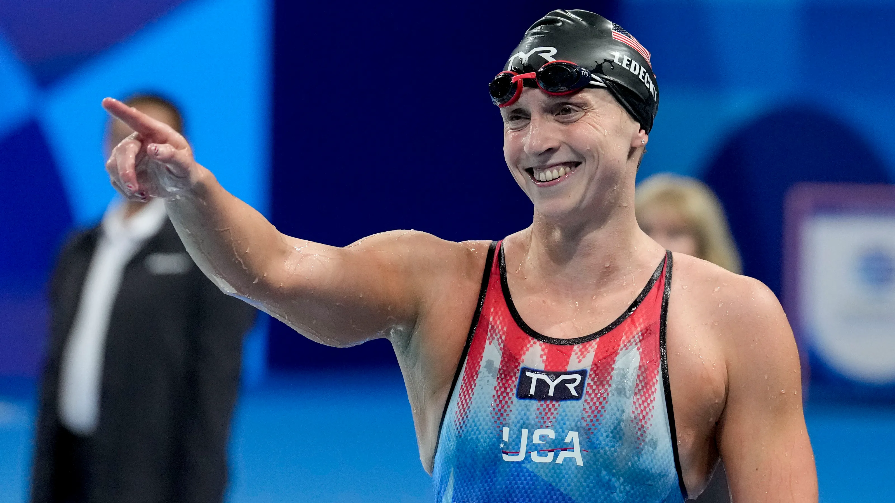

A natação é uma atividade física que consiste no deslocamento do corpo na água por meio de movimentos coordenados, principalmente dos braços e das pernas. Existem quatro estilos oficiais: crawl (livre), peito, costas e borboleta, cada um com técnicas e exigências específicas. Desde os tempos antigos, a humanidade desenvolveu uma forte relação com a água, em razão de sua ampla disponibilidade na natureza. O ambiente aquático foi utilizado, inicialmente, como meio de sobrevivência, transporte e lazer. Com o passar dos séculos, a natação se consolidou também como um esporte, ganhando espaço em treinamentos sistemáticos, competições e eventos de grande prestígio. Além de sua importância esportiva, a prática da natação traz inúmeros benefícios à saúde. Ela contribui significativamente para o condicionamento cardiorrespiratório, a coordenação motora e o fortalecimento muscular. Por isso, é considerada uma das atividades físicas mais completas. A natação pode ser praticada por pessoas de todas as idades, tanto em ambientes competitivos quanto de forma recreativa, sendo uma excelente escolha para quem busca bem-estar, qualidade de vida ou simplesmente momentos de diversão na água.
O maior nadador olímpico de todos os tempos, com 23 medalhas de ouro.
Nadadora americana, especialista em provas de longa distância, com 7 ouros olímpicos.
